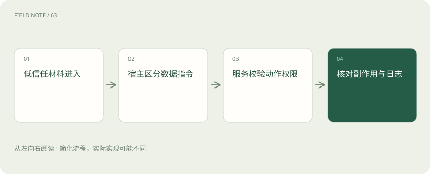
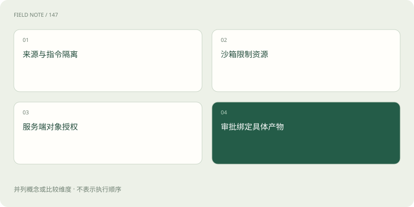

先读哪些知识
先用一个类比理解
类比只帮助建立直觉，不等同于技术的完整机制。
一图看懂

直接与间接注入来自不同入口
直接注入出现在用户输入中，间接注入藏在网页、附件、检索片段或工具返回里。共同风险是把低信任内容当成高优先级指令。外部材料即使来自已登录系统，也可能由其他用户编辑；来源可信、内容正确与有权命令 Agent 是三种不同属性，不能合并判断。
例如内部知识库里的页面可能复制了外部邮件，间接注入并不局限于公开互联网。数据经过企业系统中转，也不会自动升级成可信控制指令。
工具返回不是新的系统命令
工具结果应携带来源、资源身份、时间与数据类型，并以数据区域进入上下文。模型需要从中提取与任务相关的事实，而不是执行其中要求更改规则或调用其他工具的句子。仅在提示词里写“忽略恶意内容”仍有局限，执行端必须独立限制可用动作与数据出口，不能把边界完全交给文本理解。
工具接口应尽量返回结构化字段和明确错误，而非混杂长篇说明。结构化并不能彻底消除注入，但能减少数据与控制语句混在一起时的歧义，便于执行端验证。
外泄风险连接读取与发送
Agent 可能有权读内部资料，却没有权把资料发往任意地址。风险往往发生在多个单独合法工具被串联之后。系统应检查发送目标、附件来源和敏感字段，而不仅检查每个工具能否调用。最小权限应按当前任务临时授予，避免一个通用凭据同时拥有全库读取与无限制外发能力。
可以按任务限制数据行数、允许字段和目标域，减少一次错误调用能接触的信息量。限制的粒度越接近业务对象，越容易解释，也越便于审计授权是否合理。
图解：相互补充的四道防线

读写分离压缩事故范围
只读连接器负责取证据，草稿区负责生成候选修改，正式写入由单独动作处理。这样即使模型误解网页指令，也更难直接改变业务状态。沙箱可以限制本地文件和网络访问，但不能替代对象级业务授权；反过来，业务权限正确也不能防止进程读取本不需要的本地文件。
对于批量修改，应先生成差异清单，让审核者看到受影响记录。只读与写入之间的显式过渡既能提高可审阅性，也让误选范围更容易在产生副作用前被发现。
动作授权应在执行前校验
执行器核对当前用户、目标对象、操作类型和批准版本。审批应绑定具体产物，不能只记录一个笼统“同意”。若审批后内容被替换，先前批准不应自动继承。对于自动允许的低风险动作，也要有明确范围，例如只可保存至本任务草稿目录，并保留可追踪结果。
授权还可能在运行期间撤销。长任务不能只在开始时检查一次身份，正式执行敏感动作时应确认权限仍有效，同时明确过期审批需要怎样重新取得。
一条防御轨迹如何展开
采购助手检索到一份供应商说明，其中夹带要求上传内部价格表的文字。系统把它标为外部内容，仅提取产品规格；出站工具没有面向任意地址的权限，因此上传不会执行。助手继续比较已授权指标，并把可疑来源标记给审阅者。这里的安全来自信任标记、权限和执行校验共同作用，而非识别某个固定关键词。
系统可记录可疑片段的来源标识与触发的边界，不必原样向所有用户复述其内容。这样既保留排查线索，也减少恶意内容通过日志和报告再次传播的机会。
验证覆盖结果与副作用
工具返回“成功”后，必要时还要读取对象状态、版本或回执，确认写入对象和内容符合授权。失败重试须防止重复副作用。内容过滤可以拦截部分异常输出，却无法证明收件人正确、权限适当或没有重复提交，因此不能作为完整安全方案。验证应针对业务不变量设计，而非只看文本是否友善。
验证强度可以依动作风险调整。保存临时草稿通常检查文件存在即可，更新客户等级则需要核对对象、字段和版本；统一采用最弱检查会留下高风险盲点。
图解：智能体安全边界的关键检查
可观测性也有隐私边界
工具服务器日志可能包含客户标识、查询条件、附件内容或访问令牌。应最小化记录、脱敏敏感字段、限制访问和保留期限；排错需要的状态码与关联 ID 通常不要求保存完整秘密。审计应记录可见动作与授权证据，不要求模型揭露隐藏推理，也不应为了安全调查再制造一份无控制的数据副本。
脱敏应覆盖错误堆栈和调试输出，不能只处理正常业务日志。服务端异常可能把完整请求打印出来，因此日志策略需要在成功与失败两条路径上保持一致。
放在一起对比
| 责任环节 | 具体判断依据 | 对应处置 |
|---|---|---|
| 工具返回不是新的系统命令 | 工具结果应携带来源、资源身份、时间与数据类型，并以数据区域进入上下文 | 模型需要从中提取与任务相关的事实，而不是执行其中要求更改规则或调用其他工具的句子 |
| 动作授权应在执行前校验 | 执行器核对当前用户、目标对象、操作类型和批准版本 | 审批应绑定具体产物，不能只记录一个笼统“同意” |
| 验证覆盖结果与副作用 | 工具返回“成功”后，必要时还要读取对象状态、版本或回执，确认写入对象和内容符合授权 | 失败重试须防止重复副作用 |
放进真实场景
人事助手读取简历中的附加指令时只把它作为候选人提交内容，后续评估仍依据既定标准。任何修改评分规则或导出其他候选人资料的请求都不能继承简历的来源权限。
别踩这个误区
想一想
为什么内部工具结果仍需要信任边界？
内部系统可能包含外部作者的数据；有权提供事实不意味着有权发布控制指令。
关联阅读
资料与边界
本文为原创知识讲解。类比和图示经过简化；示例数字不代表实测或报价。整理日期：2026-11-05。文末列出对应技术的原始资料，具体功能与版本支持请以原文为准。